Capítulo 3 Support Vector Machine (SVM / SVR)
Es común encontrar en la literatura el nombre de SVM para referirse tanto al caso de regresión como al de clasificación, no obstante, SVR se refiere particularmente a Suport Vector Regression.
Support vector machine, llamado SVM, es un algoritmo de aprendizaje supervisado que se puede utilizar para problemas de clasificación y regresión. Se utiliza para conjuntos de datos más pequeños, ya que tarda demasiado en procesarse.
El principal objetivo de esta técnica es encontrar el Hiperplano de Separación Óptima, también conocido como Boundary Decision, el cual será el margen de clasificación más grande que podamos ajustar para separar a las clases involucradas, limitando las veces que una observación viola dicho margen.
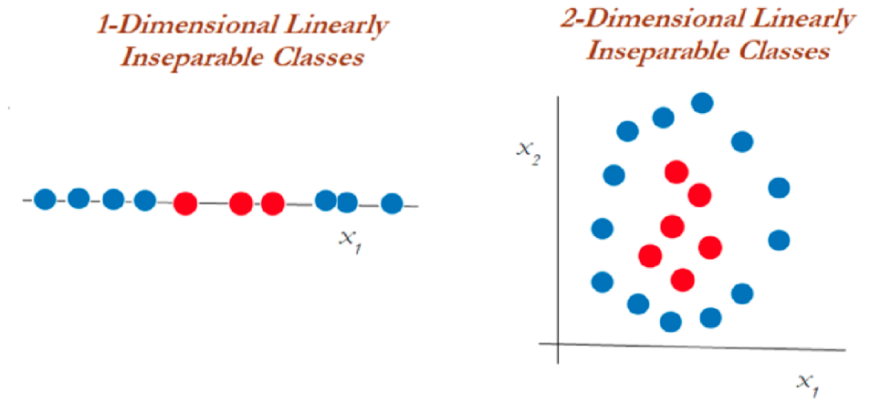
Para entender este algoritmo es necesario entender 3 conceptos principales:
Maximum margin classifiers
Support vector classifiers
Support vector machines
Estudiemos cada uno de estos principios.
3.1 Maximum Margin Classifier
A menudo se generalizan con máquinas de vectores de soporte, pero SVM tiene muchos más parámetros en comparación. El clasificador de margen máximo considera un hiperplano con ancho de separación máxima para clasificar los datos. Sin embargo, se pueden dibujar infinitos hiperplanos en un conjunto de datos por lo que es importante elegir el hiperplano ideal para la clasificación.
En un espacio n-dimensional, un hiperplano es un subespacio de la dimensión n-1. Es decir, si los datos tienen un espacio bidimensional, entonces el hiperplano puede ser una línea recta que divide el espacio de datos en dos mitades y pasa por la siguiente ecuacion:
\[\beta_0 + \beta_1X_1 + \beta_2X_2=0\]
Las observaciones que caen en el hiperplano sigue la ecuación anterior. Las observaciones que caen en la región por encima o por debajo del hiperplano sigue las siguientes ecuaciones:
\[\beta_0 + \beta_1X_1 + \beta_2X_2>0\]
\[\beta_0 + \beta_1X_1 + \beta_2X_2<0\]
El clasificador de margen máximo a menudo falla en la situación de casos no separables en los que no puede asignar un hiperplano diferente para clasificar datos no separables. Para tales casos, un clasificador de vectores de soporte viene al rescate.
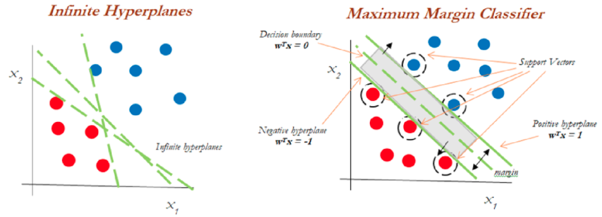
Del diagrama anterior, podemos suponer infinitos hiperplanos (izquierda). El clasificador de margen máximo viene con un solo hiperplano que divide los datos como en la gráfica de la derecha. Los datos que tocan los hiperplanos positivo y negativo se denominan vectores de soporte.
3.2 Support Vector Classifiers
Los vectores de soporte son las observaciones que están más cerca del hiperplano e influyen en la posición y orientación del hiperplano. Este tipo de clasificador puede considerarse como una versión extendida del clasificador de margen máximo. Cuando tratamos con datos de la vida real, encontramos que la mayoría de las observaciones están en clases superpuestas. Es por eso que se implementan clasificadores de vectores de soporte.
Usando estos vectores de soporte, maximizamos el margen del clasificador. Eliminar los vectores de soporte cambiará la posición del hiperplano. Estos son los puntos que nos ayudan a construir nuestro SVM. Consideremos un parámetro de ajuste C. Entendamos con el siguiente diagrama.
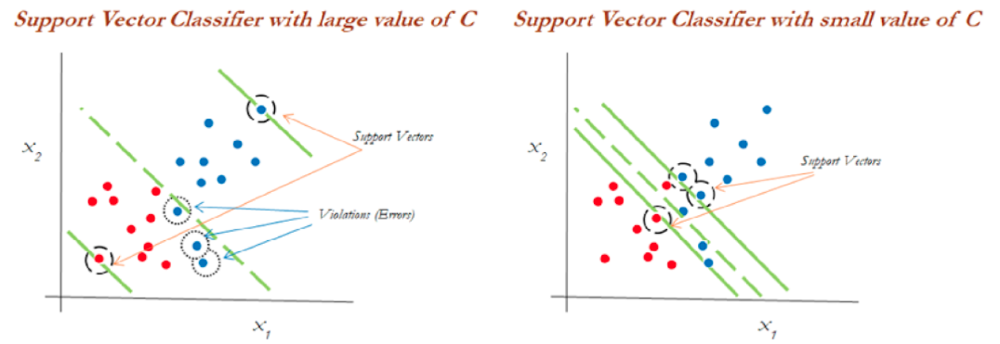
Podemos ver en el gráfico de la izquierda que los valores más altos de C generaron más errores que se consideran una violación o infracción. El diagrama de la derecha muestra un valor más bajo de C y no brinda suficientes posibilidades de infracción al reducir el ancho del margen.
Puede considerarse al parámetro C como el monto de regularización, tal que:
Si C es bajo, el margen será más amplio y tendremos un mayor número de violaciones al margen, pero el modelo generalizará mejor
Si C es alto, nuestro margen será menos amplio y tendrá menos violaciones. Sin embargo, no generalizará bien.
Este modelo es sensible a cambios en la escala de datos de entrada, por lo que será importante estandarizar las variables antes de usar este modelo.
3.3 Support Vector Machine
El enfoque de la máquina de vectores de soporte se considera durante una decisión no lineal y los datos no son separables por un clasificador de vectores de soporte, independientemente de la función de costo.
Cuando es casi imposible separar clases de manera no lineal, aplicamos el truco llamado truco del kernel el cual ayuda a manejar la separación de los datos.
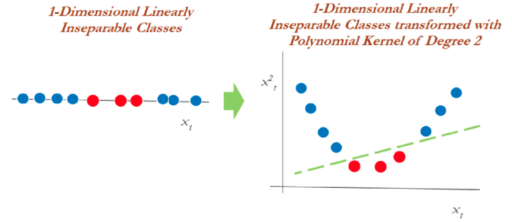
En el gráfico anterior, los datos que eran inseparables en una dimensión se separaron una vez que se transformaron a un espacio de dos dimensiones después de aplicar una transformación mediante kernel polinomial de segundo grado. Ahora veamos cómo manejar los datos bidimensionales linealmente inseparables.
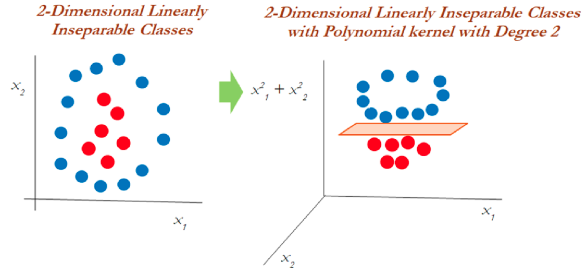
En datos bidimensionales, el núcleo polinomial de segundo grado se aplica utilizando un plano lineal después de transformarlo a dimensiones superiores.
3.4 El truco del Kernel
Las funciones Kernel son métodos con los que se utilizan clasificadores lineales como SVM para clasificar puntos de datos separables no linealmente. Esto se hace representando los puntos de datos en un espacio de mayor dimensión que su original. Por ejemplo, los datos 1D se pueden representar como datos 2D en el espacio, los datos 2D se pueden representar como datos 3D, etcétera.
El truco del kernel ofrece una forma de calcular las relaciones entre los puntos de datos utilizando funciones del kernel y representar los datos de una manera más eficiente con menos cómputo. Los modelos que utilizan esta técnica se denominan “modelos kernelizados”.
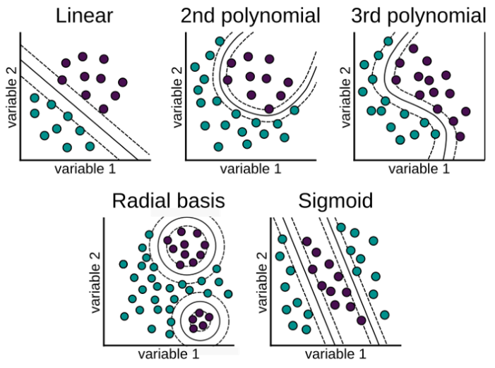
Hay varias funciones que utiliza SVM para realizar esta tarea. Algunos de los más comunes son:
- El núcleo lineal: Se utiliza para datos lineales. Esto simplemente representa los puntos de datos usando una relación lineal.
\[K(x, y)=(x^T \cdot y)\] \[f(x)=w^T \cdot x + b\] Esta formulación se presenta como solución al problema de optimización sobre w:
\[min_{w\in R^d} \frac{1}{2}\parallel w \parallel ^2+ C\sum_{i}^{N}{max(0, 1-y_i f(x_i))}\] \[s.a. \quad y_i f(x_i) \geq 1 - max(0, 1-y_i f(x_i))\] En donde \(1-y_i f(x_i)\) es la distancia de \(x_i\) al correspondiente margen de la clase si \(x_i\) se encuentra en el lado equivocado del margen y cero en caso contrario. De esta forma, los puntos que se encuentran lejos del margen del lado equivocado obtendrán una mayor penalización. Dar click en la siguiente liga para mayor entendimiento del problema de optimización.
- Función de núcleo polinomial: Transforma los puntos de datos mediante el uso del producto escalar y la transformación de los datos en una “dimensión n”, n podría ser cualquier valor de 2, 3, etcétera, es decir, la transformación será un producto al cuadrado o superior. Por lo tanto, representar datos en un espacio de mayor dimensión utilizando los nuevos puntos transformados.
\[K(x, y)=(c+ x^T \cdot y)^p\]
Cuando se emplea \(p=1\) y \(c=0\), el resultado es el mismo que el de un kernel lineal. Si \(p>1\), se generan límites de decisión no lineales, aumentando la no linealidad a medida que aumenta p. No suele ser recomendable emplear valores de p mayores 5 por problemas de overfitting.
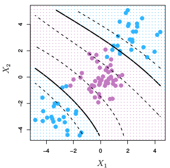
- La función de base radial (RBF): Esta función se comporta como un “modelo de vecino más cercano ponderado”. Transforma los datos representándolos en dimensiones infinitas,
La función Radial puede ser de Gauss o de Laplace. Esto depende de un hiperparámetro conocido como gamma \(\gamma\). Cuanto menor sea el valor del hiperparámetro, menor será el sesgo y mayor la varianza. Mientras que un valor más alto de hiperparámetro da un sesgo más alto y menor varianza. Este es el núcleo más utilizado.
\[K(x, y)=exp(-\gamma \parallel x - y\parallel^2)=exp(-\frac{\parallel x-y \parallel ^2}{2\sigma²})\] \[f(x)=w^T \cdot \phi(x) + b\] Se realiza un mapeo de x a \(\phi(x)\) en donde los datos son separables
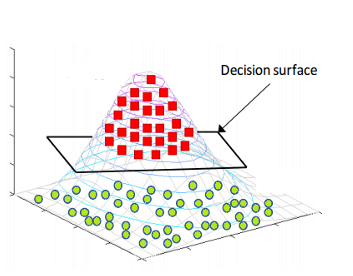
Es recomendable probar el kernel RBF. Este kernel tiene dos ventajas: que solo tiene dos hiperparámetros que optimizar (\(\gamma\) y la penalización \(C\) común a todos los SVM) y que su flexibilidad puede ir desde un clasificador lineal a uno muy complejo.
- La función sigmoide: También conocida como función tangente hiperbólica (Tanh), encuentra más aplicación en redes neuronales como función de activación. Esta función mapea los valores de entrada al intervalo [-1, 1].
\[K(x, y)= tanh(\kappa x\cdot y-\delta)\]
¿Por qué se llama un “truco del kernel”?
SVM vuelve a representar los puntos de datos no lineales utilizando cualquiera de las funciones del kernel de una manera que parece que los datos se han transformado, luego encuentra el hiperplano de separación óptimo, sin embargo, en realidad, los puntos de datos siguen siendo los mismos, en realidad no se han transformado. Es por eso que se llama un ‘truco del kernel’.
3.5 Support Vector Regression
El problema de la regresión es encontrar una función que aproxime la relación de un dominio de datos de entrada a números reales con base en una muestra de entrenamiento. Veamos cómo funciona SVR en realidad.
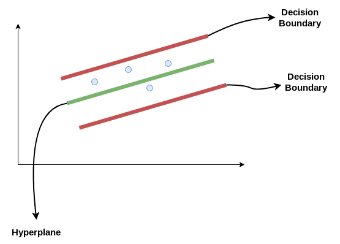
Consideremos las dos líneas rojas como el límite de decisión y la línea verde como el hiperplano. Nuestro objetivo, cuando avanzamos con SVR, es básicamente considerar los puntos que están dentro de la línea límite de decisión. Nuestra línea de mejor ajuste es el hiperplano que tiene un número máximo de puntos.
Lo primero que entenderemos será el límite de decisión. Consideremos estas líneas como si estuvieran a cualquier distancia, digamos ‘a’, del hiperplano. Entonces, estas son las líneas que dibujamos a la distancia ‘+a’ y ‘-a’ del hiperplano. Esta ‘a’ en el texto se conoce básicamente como épsilon y representa el margen.
Suponiendo que la ecuación del hiperplano es la siguiente:
\[Y_i = W^TX + b\] Entonces estas ecuaciones se transforman en la siguiente forma:
\(W^TX + b = +a\)
\(W^TX + b = -a\)
Por lo tanto, cualquier hiperplano que satisfaga nuestra SVR debería satisfacer: \(-a < Y- WX+b < +a\)
Nuestro objetivo principal aquí es decidir un límite de decisión a una distancia ‘a’ del hiperplano original, de modo que los puntos de datos más cercanos al hiperplano o los vectores de soporte estén dentro de esa línea límite.
Vamos a tomar solo aquellos puntos que están dentro del límite de decisión y tienen la menor tasa de error, o están dentro del margen de tolerancia. Esto nos da un mejor modelo de ajuste.
3.6 Ventajas y desventajas
Ventajas
Es un modelo que ajusta bien con pocos datos
Son flexibles en datos no estructurados, estructurados y semiestructurados.
La función Kernel alivia las complejidades en casi cualquier tipo de datos.
Se observa menos sobreajuste en comparación con otros modelos.
Desventajas
El tiempo de entrenamiento es mayor cuando se calculan grandes conjuntos de datos.
Los hiperparámetros suelen ser un desafío al interpretar su impacto.
La interpretación general es difícil (black box).
3.7 Ajuste del modelo con Python
Usaremos las recetas antes implementadas para ajustar tanto el modelo de regresión como el de clasificación. Exploraremos un conjunto de hiperparámetros para elegir el mejor modelo.
Recordemos los pasos a seguir al ajustar un modelo
- Separación inicial de datos ( test, train
) - Pre-procesamiento e ingeniería de variables
- Selección de tipo de modelo con hiperparámetros iniciales
- Inicialización de workflow o pipeline
- Creación de grid search
- Entrenamiento de modelos con hiperparámetros definidos (salvar los modelos entrenados)
- Análisis de métricas de error e hiperparámetros (Vuelve al paso 3, si es necesario)
- Selección de modelo a usar
- Ajuste de modelo final con todos los datos (Vuelve al paso 2, si es necesario)
- Validar poder predictivo con datos de prueba.
3.7.1 Implementación de SVR en Python
A continuación, revisaremos paso por paso este procedimiento usando SVM como modelo. Los datos corresponden a nuestro ya conocido problema predictivo de precio de casas. Se puede encontrar los datos y documentación en el siguiente enlace
Paso 1: Separación inicial de datos ( test, train
from scipy.stats import randint, loguniform, uniform
from sklearn.inspection import permutation_importance
from sklearn.model_selection import KFold, RandomizedSearchCV, StratifiedKFold, train_test_split
from sklearn.svm import SVC, SVR
from dsml_utils import (
best_cv_results,
classification_metrics,
load_ames,
load_telco,
make_ames_pipeline,
make_telco_pipeline,
pr_curve_table,
regression_metrics,
roc_curve_table,
)
ames = load_ames()
ames_train, ames_test = train_test_split(ames, train_size=0.75, random_state=4595)
X_ames_train = ames_train.drop(columns="Sale_Price")
y_ames_train = ames_train["Sale_Price"]
X_ames_test = ames_test.drop(columns="Sale_Price")
y_ames_test = ames_test["Sale_Price"]
ames_folds = KFold(n_splits=5, shuffle=True, random_state=4595)Contando con datos de entrenamiento, procedemos a realizar el feature engineering para extraer las mejores características que permitirán realizar las estimaciones en el modelo.
Paso 2: Pre-procesamiento e ingeniería de variables
receta_casas = make_ames_pipeline(SVR(kernel="rbf"), scale_numeric=True)
receta_casas## Pipeline(steps=[('features',
## DataFrameFunctionTransformer(func=<function preprocess_ames_frame at 0x17a552660>,
## kw_args={'keep_target': False,
## 'large': False})),
## ('preprocess',
## ColumnTransformer(transformers=[('num',
## Pipeline(steps=[('imputer',
## SimpleImputer(strategy='median')),
## ('scaler',
## StandardScaler())]),
## <sklearn.compose._column_transformer.make_column_selector object at 0x17a574e10>),
## ('cat',
## Pipeline(steps=[('imputer',
## SimpleImputer(strategy='most_frequent')),
## ('onehot',
## OneHotEncoder(handle_unknown='ignore',
## sparse_output=False))]),
## <sklearn.compose._column_transformer.make_column_selector object at 0x3043836d0>)],
## verbose_feature_names_out=False)),
## ('model', SVR())])Recordemos que un Pipeline contiene los pasos a seguir; usamos fit() para estimar transformaciones y modelo, y transform() o predict() para aplicarlo a nuevos datos.
Una vez que la transformación de datos está lista, procedemos a implementar el pipeline del modelo de interés. En scikit-learn, los kernels equivalentes se especifican en SVR o SVC:
- Base lineal:
SVR(kernel="linear") - Base polinomial:
SVR(kernel="poly") - Base radial:
SVR(kernel="rbf")
Paso 3: Selección de tipo de modelo con hiperparámetros iniciales
svm_model = SVR(kernel="rbf")
svm_model## SVR()Paso 4: Inicialización de workflow o pipeline
svm_workflow = make_ames_pipeline(svm_model, scale_numeric=True)
svm_workflow## Pipeline(steps=[('features',
## DataFrameFunctionTransformer(func=<function preprocess_ames_frame at 0x17a552660>,
## kw_args={'keep_target': False,
## 'large': False})),
## ('preprocess',
## ColumnTransformer(transformers=[('num',
## Pipeline(steps=[('imputer',
## SimpleImputer(strategy='median')),
## ('scaler',
## StandardScaler())]),
## <sklearn.compose._column_transformer.make_column_selector object at 0x17a59ce10>),
## ('cat',
## Pipeline(steps=[('imputer',
## SimpleImputer(strategy='most_frequent')),
## ('onehot',
## OneHotEncoder(handle_unknown='ignore',
## sparse_output=False))]),
## <sklearn.compose._column_transformer.make_column_selector object at 0x3044588d0>)],
## verbose_feature_names_out=False)),
## ('model', SVR())])Paso 5: Creación de grid search
svm_param_distributions = {
"model__C": loguniform(1e-1, 1e2),
"model__gamma": loguniform(1e-4, 1e0),
"model__epsilon": uniform(0.01, 0.50),
}
svm_param_distributions## {'model__C': <scipy.stats._distn_infrastructure.rv_continuous_frozen object at 0x30439d410>, 'model__gamma': <scipy.stats._distn_infrastructure.rv_continuous_frozen object at 0x304502a90>, 'model__epsilon': <scipy.stats._distn_infrastructure.rv_continuous_frozen object at 0x3043de810>}Paso 6: Entrenamiento de modelos con hiperparámetros definidos
svm_tune_result = RandomizedSearchCV(
svm_workflow,
param_distributions=svm_param_distributions,
n_iter=50,
cv=ames_folds,
scoring="neg_mean_absolute_percentage_error",
random_state=123,
n_jobs=-1,
)
svm_tune_result.fit(X_ames_train, y_ames_train)
import joblib
joblib.dump(svm_tune_result, "models/svm_model_reg.joblib")Podemos obtener las métricas de cada fold con el siguiente código:
svm_tune_result = RandomizedSearchCV(
svm_workflow,
param_distributions=svm_param_distributions,
n_iter=20,
cv=ames_folds,
scoring="neg_mean_absolute_percentage_error",
random_state=123,
n_jobs=-1,
)
svm_tune_result.fit(X_ames_train, y_ames_train)## RandomizedSearchCV(cv=KFold(n_splits=5, random_state=4595, shuffle=True),
## estimator=Pipeline(steps=[('features',
## DataFrameFunctionTransformer(func=<function preprocess_ames_frame at 0x17a552660>,
## kw_args={'keep_target': False,
## 'large': False})),
## ('preprocess',
## ColumnTransformer(transformers=[('num',
## Pipeline(steps=[('imputer',
## SimpleImputer(strategy='median')),
## ('...
## param_distributions={'model__C': <scipy.stats._distn_infrastructure.rv_continuous_frozen object at 0x30439d410>,
## 'model__epsilon': <scipy.stats._distn_infrastructure.rv_continuous_frozen object at 0x3043de810>,
## 'model__gamma': <scipy.stats._distn_infrastructure.rv_continuous_frozen object at 0x304502a90>},
## random_state=123,
## scoring='neg_mean_absolute_percentage_error')pd.DataFrame(svm_tune_result.cv_results_).head()## mean_fit_time std_fit_time ... std_test_score rank_test_score
## 0 0.282041 0.039919 ... 0.018045 7
## 1 0.296305 0.052391 ... 0.017997 6
## 2 0.253354 0.024810 ... 0.017114 1
## 3 0.291111 0.031608 ... 0.018112 17
## 4 0.277628 0.038575 ... 0.018074 10
##
## [5 rows x 16 columns]Paso 7: Análisis de métricas de error e hiperparámetros (Vuelve al paso 3, si es necesario)
best_cv_results(svm_tune_result, n=10)## param_model__C param_model__epsilon ... mean_test_score std_test_score
## 2 87.557347 0.352415 ... -0.303766 0.017114
## 17 30.131614 0.311530 ... -0.317290 0.017341
## 7 35.342347 0.372228 ... -0.318673 0.017373
## 19 11.063749 0.447728 ... -0.321915 0.017683
## 8 14.700434 0.171479 ... -0.322774 0.017803
## 1 4.507589 0.369734 ... -0.324043 0.017997
## 0 12.285916 0.153070 ... -0.324375 0.018045
## 6 3.932368 0.275914 ... -0.324410 0.018018
## 5 16.367646 0.101246 ... -0.324468 0.018056
## 4 2.068792 0.039839 ... -0.324634 0.018074
##
## [10 rows x 5 columns]En la siguiente gráfica observamos las distintas métricas de error asociados a los hiperparámetros elegidos:
svm_results = pd.DataFrame(svm_tune_result.cv_results_)
svm_results.plot.scatter(x="param_model__C", y="mean_test_score", logx=True)## <Axes: xlabel='param_model__C', ylabel='mean_test_score'>plt.title("Desempeño por C")## Text(0.5, 1.0, 'Desempeño por C')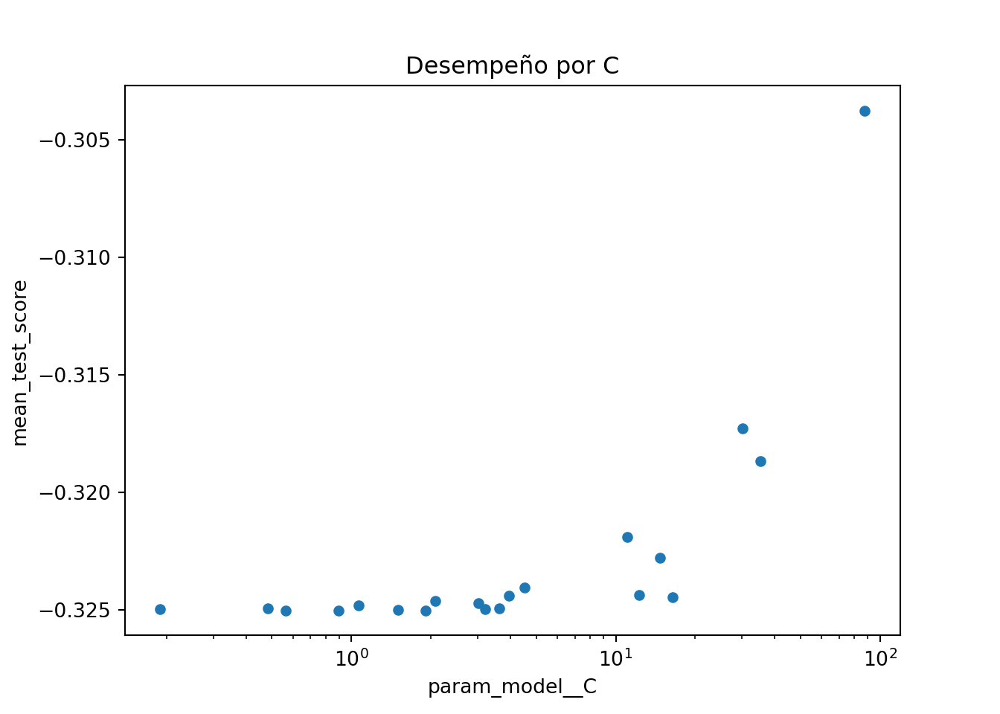
best_cv_results(svm_tune_result, n=10)## param_model__C param_model__epsilon ... mean_test_score std_test_score
## 2 87.557347 0.352415 ... -0.303766 0.017114
## 17 30.131614 0.311530 ... -0.317290 0.017341
## 7 35.342347 0.372228 ... -0.318673 0.017373
## 19 11.063749 0.447728 ... -0.321915 0.017683
## 8 14.700434 0.171479 ... -0.322774 0.017803
## 1 4.507589 0.369734 ... -0.324043 0.017997
## 0 12.285916 0.153070 ... -0.324375 0.018045
## 6 3.932368 0.275914 ... -0.324410 0.018018
## 5 16.367646 0.101246 ... -0.324468 0.018056
## 4 2.068792 0.039839 ... -0.324634 0.018074
##
## [10 rows x 5 columns]Paso 8: Selección de modelo a usar
# Selección del mejor modelo según MAPE.
svm_regression_best_model = svm_tune_result.best_params_
svm_regression_best_model## {'model__C': 87.55734725056492, 'model__epsilon': 0.35241486929243165, 'model__gamma': 0.00838933633479257}# Aproximación práctica al criterio 1-SE: preferir C menor entre modelos cercanos al mejor.
best_score = svm_tune_result.best_score_
std_score = svm_results.loc[svm_tune_result.best_index_, "std_test_score"]
svm_regression_best_1se_model = (
svm_results.query("mean_test_score >= @best_score - @std_score")
.sort_values("param_model__C")
.iloc[0]
.filter(like="param_")
)
svm_regression_best_1se_model## param_model__C 30.131614
## param_model__epsilon 0.31153
## param_model__gamma 0.015145
## Name: 17, dtype: objectPaso 9: Ajuste de modelo final con todos los datos (Vuelve al paso 2, si es necesario)
# Modelo final.
svm_regression_final_model = svm_tune_result.best_estimator_
svm_regression_final_model## Pipeline(steps=[('features',
## DataFrameFunctionTransformer(func=<function preprocess_ames_frame at 0x17a552660>,
## kw_args={'keep_target': False,
## 'large': False})),
## ('preprocess',
## ColumnTransformer(transformers=[('num',
## Pipeline(steps=[('imputer',
## SimpleImputer(strategy='median')),
## ('scaler',
## StandardScaler())]),
## <sklearn.compose._column_transformer.make_column_sele...
## ('cat',
## Pipeline(steps=[('imputer',
## SimpleImputer(strategy='most_frequent')),
## ('onehot',
## OneHotEncoder(handle_unknown='ignore',
## sparse_output=False))]),
## <sklearn.compose._column_transformer.make_column_selector object at 0x304483fd0>)],
## verbose_feature_names_out=False)),
## ('model',
## SVR(C=87.55734725056492, epsilon=0.35241486929243165,
## gamma=0.00838933633479257))])Como hemos hablado anteriormente, este último objeto es el modelo final entrenado, el cual contiene toda la información del pre-procesamiento de datos, por lo que en caso de ponerse en producción el modelo, sólo se necesita de este último elemento para poder realizar nuevas predicciones.
Antes de pasar al siguiente paso, es importante validar que hayamos hecho un uso correcto de las variables predictivas. En este momento es posible detectar variables que no estén aportando valor o variables que no debiéramos estar usando debido a que cometeríamos data leakage. Para enfrentar esto, ayuda estimar y ordenar el valor de importancia del modelo
ames_importance_result = permutation_importance(
svm_regression_final_model,
X_ames_test,
y_ames_test,
scoring="neg_root_mean_squared_error",
n_repeats=10,
random_state=123,
)ames_importance_result = permutation_importance(
svm_regression_final_model,
X_ames_test,
y_ames_test,
scoring="neg_root_mean_squared_error",
n_repeats=5,
random_state=123,
)
ames_importance = (
pd.DataFrame(
{
"Variable": X_ames_test.columns,
"Importance": ames_importance_result.importances_mean,
"StDev": ames_importance_result.importances_std,
}
)
.sort_values("Importance", ascending=False)
.head(20)
)
display(ames_importance)## Variable Importance StDev
## 46 Gr_Liv_Area 712.262862 51.182708
## 17 OverallQual 295.620406 16.576544
## 19 Year_Built 195.860624 11.822307
## 61 GarageCars 188.582311 15.492497
## 49 Full_Bath 178.366855 20.948231
## 20 Year_Remod_Add 174.015997 18.148603
## 62 GarageArea 161.224136 12.094313
## 59 GarageYrBlt 149.200610 6.252513
## 54 TotRms_AbvGrd 136.528964 35.263109
## 43 1stFlrSF 132.081646 2.933171
## 56 Fireplaces 116.417902 10.552683
## 27 ExterQual 101.375549 4.506931
## 53 KitchenQual 87.099503 5.972127
## 38 Total_Bsmt_SF 82.342464 6.782362
## 29 Foundation 79.780880 4.346387
## 3 Lot_Frontage 71.593048 17.497966
## 30 BsmtQual 70.296216 6.011103
## 50 Half_Bath 61.729294 10.115921
## 67 Open_Porch_SF 61.421703 11.480114
## 60 Garage_Finish 59.824821 3.680770ax = ames_importance.sort_values("Importance").plot.barh(
x="Variable", y="Importance", xerr="StDev", legend=False, figsize=(8, 6)
)
ax.set_title("Variable Importance Measure")## Text(0.5, 1.0, 'Variable Importance Measure')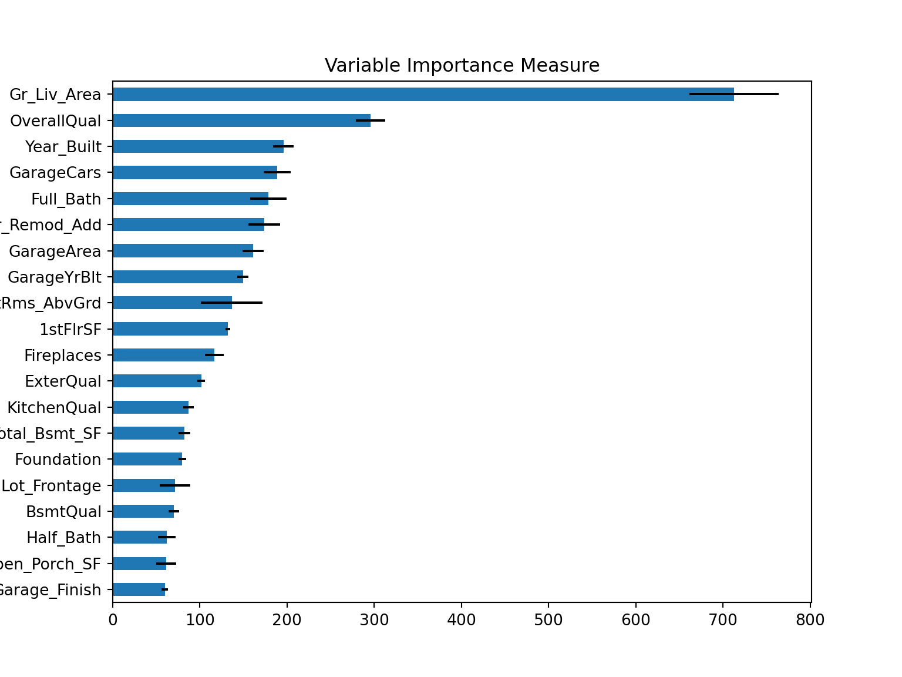
Paso 10: Validar poder predictivo con datos de prueba
Imaginemos por un momento que pasa un mes de tiempo desde que hicimos nuestro modelo, es hora de ponerlo a prueba prediciendo valores de nuevos elementos:
# Predicciones
results = pd.DataFrame(
{
"Sale_Price": y_ames_test.to_numpy(),
"pred_svm_reg": svm_regression_final_model.predict(X_ames_test),
}
)
results.head()## Sale_Price pred_svm_reg
## 0 253000 170316.727352
## 1 161750 161631.787982
## 2 89471 160399.392142
## 3 314813 170380.286992
## 4 180500 164530.537701regression_metrics(results["Sale_Price"], results["pred_svm_reg"])## metric estimate
## 0 rmse 75365.636244
## 1 mae 50865.367102
## 2 mape 0.278303
## 3 rsq 0.046849
## 4 ccc 0.095768Es posible definir nuestro propio conjunto de metricas que deseamos reportar creando este objeto:
regression_metrics(results["Sale_Price"], results["pred_svm_reg"]).assign(
estimate=lambda x: x["estimate"].round(2)
)## metric estimate
## 0 rmse 75365.64
## 1 mae 50865.37
## 2 mape 0.28
## 3 rsq 0.05
## 4 ccc 0.10plt.scatter(results["pred_svm_reg"], results["Sale_Price"], alpha=0.6)## <matplotlib.collections.PathCollection object at 0x3046289d0>lims = [results[["pred_svm_reg", "Sale_Price"]].min().min(), results[["pred_svm_reg", "Sale_Price"]].max().max()]
plt.plot(lims, lims, color="red")## [<matplotlib.lines.Line2D object at 0x304718a10>]plt.xlabel("Prediction")## Text(0.5, 0, 'Prediction')plt.ylabel("Observation")## Text(0, 0.5, 'Observation')plt.title("Comparison")## Text(0.5, 1.0, 'Comparison')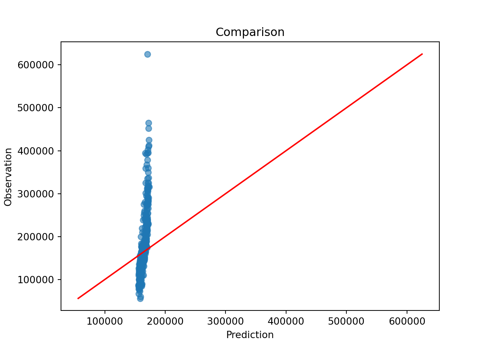
3.7.2 Implementación de SVM en Python
Es turno de revisar la implementación de SVM con nuestro bien conocido problema de predicción de cancelación de servicios de telecomunicaciones. Los datos se encuentran disponibles en el siguiente enlace:
Los pasos para implementar en Python este modelo predictivo son los mismos, cambiando únicamente las especificaciones del tipo de modelo, pre-procesamiento e hiper-parámetros.
telco = load_telco("data/Churn.csv")
telco.info()## <class 'pandas.core.frame.DataFrame'>
## RangeIndex: 7043 entries, 0 to 7042
## Data columns (total 21 columns):
## # Column Non-Null Count Dtype
## --- ------ -------------- -----
## 0 customerID 7043 non-null object
## 1 gender 7043 non-null object
## 2 SeniorCitizen 7043 non-null int64
## 3 Partner 7043 non-null object
## 4 Dependents 7043 non-null object
## 5 tenure 7043 non-null int64
## 6 PhoneService 7043 non-null object
## 7 MultipleLines 7043 non-null object
## 8 InternetService 7043 non-null object
## 9 OnlineSecurity 7043 non-null object
## 10 OnlineBackup 7043 non-null object
## 11 DeviceProtection 7043 non-null object
## 12 TechSupport 7043 non-null object
## 13 StreamingTV 7043 non-null object
## 14 StreamingMovies 7043 non-null object
## 15 Contract 7043 non-null object
## 16 PaperlessBilling 7043 non-null object
## 17 PaymentMethod 7043 non-null object
## 18 MonthlyCharges 7043 non-null float64
## 19 TotalCharges 7032 non-null float64
## 20 Churn 7043 non-null object
## dtypes: float64(2), int64(2), object(17)
## memory usage: 1.1+ MBtelco.head()## customerID gender SeniorCitizen ... MonthlyCharges TotalCharges Churn
## 0 7590-VHVEG Female 0 ... 29.85 29.85 No
## 1 5575-GNVDE Male 0 ... 56.95 1889.50 No
## 2 3668-QPYBK Male 0 ... 53.85 108.15 Yes
## 3 7795-CFOCW Male 0 ... 42.30 1840.75 No
## 4 9237-HQITU Female 0 ... 70.70 151.65 Yes
##
## [5 rows x 21 columns]Paso 1: Separación inicial de datos ( test, train
telco_train, telco_test = train_test_split(
telco,
train_size=0.70,
random_state=1234,
stratify=telco["Churn"],
)
X_telco_train = telco_train.drop(columns="Churn")
y_telco_train = telco_train["Churn"]
X_telco_test = telco_test.drop(columns="Churn")
y_telco_test = telco_test["Churn"]
telco_folds = StratifiedKFold(n_splits=5, shuffle=True, random_state=1234)
telco_folds## StratifiedKFold(n_splits=5, random_state=1234, shuffle=True)Paso 2: Pre-procesamiento e ingeniería de variables
telco_rec = make_telco_pipeline(SVC(kernel="rbf", probability=True, random_state=1352))
telco_rec## Pipeline(steps=[('features',
## DataFrameFunctionTransformer(func=<function preprocess_telco_frame at 0x17a5525c0>,
## kw_args={'keep_target': False})),
## ('preprocess',
## ColumnTransformer(transformers=[('num',
## Pipeline(steps=[('imputer',
## SimpleImputer(strategy='median')),
## ('scaler',
## StandardScaler())]),
## <sklearn.compose._column_transformer.make_column_selector object at 0x304600fd0>),
## ('cat',
## Pipeline(steps=[('imputer',
## SimpleImputer(strategy='most_frequent')),
## ('onehot',
## OneHotEncoder(handle_unknown='ignore',
## sparse_output=False))]),
## <sklearn.compose._column_transformer.make_column_selector object at 0x302b94b10>)],
## verbose_feature_names_out=False)),
## ('model', SVC(probability=True, random_state=1352))])Paso 3: Selección de tipo de modelo con hiperparámetros iniciales
svm_class_model = SVC(kernel="rbf", probability=True, random_state=1352)
svm_class_model## SVC(probability=True, random_state=1352)Paso 4: Inicialización de workflow o pipeline
svm_class_workflow = make_telco_pipeline(svm_class_model)
svm_class_workflow## Pipeline(steps=[('features',
## DataFrameFunctionTransformer(func=<function preprocess_telco_frame at 0x17a5525c0>,
## kw_args={'keep_target': False})),
## ('preprocess',
## ColumnTransformer(transformers=[('num',
## Pipeline(steps=[('imputer',
## SimpleImputer(strategy='median')),
## ('scaler',
## StandardScaler())]),
## <sklearn.compose._column_transformer.make_column_selector object at 0x302274190>),
## ('cat',
## Pipeline(steps=[('imputer',
## SimpleImputer(strategy='most_frequent')),
## ('onehot',
## OneHotEncoder(handle_unknown='ignore',
## sparse_output=False))]),
## <sklearn.compose._column_transformer.make_column_selector object at 0x302274910>)],
## verbose_feature_names_out=False)),
## ('model', SVC(probability=True, random_state=1352))])Paso 5: Creación de grid search
svm_class_param_distributions = {
"model__C": loguniform(1e-1, 1e2),
"model__gamma": loguniform(1e-4, 1e0),
}
svm_class_param_distributions## {'model__C': <scipy.stats._distn_infrastructure.rv_continuous_frozen object at 0x30425a510>, 'model__gamma': <scipy.stats._distn_infrastructure.rv_continuous_frozen object at 0x3045ffe90>}Paso 6: Entrenamiento de modelos con hiperparámetros definidos
svm_tune_class_result = RandomizedSearchCV(
svm_class_workflow,
param_distributions=svm_class_param_distributions,
n_iter=50,
cv=telco_folds,
scoring="roc_auc",
random_state=123,
n_jobs=-1,
)
svm_tune_class_result.fit(X_telco_train, y_telco_train)svm_tune_class_result = RandomizedSearchCV(
svm_class_workflow,
param_distributions=svm_class_param_distributions,
n_iter=20,
cv=telco_folds,
scoring="roc_auc",
random_state=123,
n_jobs=-1,
)
svm_tune_class_result.fit(X_telco_train, y_telco_train)## RandomizedSearchCV(cv=StratifiedKFold(n_splits=5, random_state=1234, shuffle=True),
## estimator=Pipeline(steps=[('features',
## DataFrameFunctionTransformer(func=<function preprocess_telco_frame at 0x17a5525c0>,
## kw_args={'keep_target': False})),
## ('preprocess',
## ColumnTransformer(transformers=[('num',
## Pipeline(steps=[('imputer',
## SimpleImputer(strategy='median')),
## ('sca...
## <sklearn.compose._column_transformer.make_column_selector object at 0x302274910>)],
## verbose_feature_names_out=False)),
## ('model',
## SVC(probability=True,
## random_state=1352))]),
## n_iter=20, n_jobs=-1,
## param_distributions={'model__C': <scipy.stats._distn_infrastructure.rv_continuous_frozen object at 0x30425a510>,
## 'model__gamma': <scipy.stats._distn_infrastructure.rv_continuous_frozen object at 0x3045ffe90>},
## random_state=123, scoring='roc_auc')pd.DataFrame(svm_tune_class_result.cv_results_).head()## mean_fit_time std_fit_time ... std_test_score rank_test_score
## 0 5.541229 0.315364 ... 0.012270 8
## 1 6.520486 1.117663 ... 0.012424 7
## 2 6.951474 0.196955 ... 0.010325 11
## 3 10.385459 0.378335 ... 0.009574 20
## 4 5.611289 0.136681 ... 0.012803 6
##
## [5 rows x 15 columns]Paso 7: Análisis de métricas de error e hiperparámetros (Vuelve al paso 3, si es necesario)
best_cv_results(svm_tune_class_result, n=10)## param_model__C param_model__gamma mean_test_score std_test_score
## 17 1.894484 0.001774 0.838524 0.013656
## 13 1.217211 0.000819 0.838233 0.013827
## 8 0.352757 0.000503 0.838231 0.013908
## 6 2.068792 0.000173 0.838231 0.013958
## 15 0.188936 0.005430 0.837951 0.013821
## 4 2.772016 0.003702 0.836064 0.012803
## 1 0.479241 0.016042 0.835897 0.012424
## 0 12.285916 0.001395 0.834836 0.012270
## 12 14.700434 0.001958 0.832890 0.012267
## 16 1.961500 0.009435 0.832644 0.011828En la siguiente gráfica observamos las distintas métricas de error asociados a los hiperparámetros elegidos.
svm_class_results = pd.DataFrame(svm_tune_class_result.cv_results_)
svm_class_results.plot.scatter(x="param_model__C", y="mean_test_score", logx=True)## <Axes: xlabel='param_model__C', ylabel='mean_test_score'>plt.title("ROC AUC por C")## Text(0.5, 1.0, 'ROC AUC por C')best_cv_results(svm_tune_class_result, n=10)## param_model__C param_model__gamma mean_test_score std_test_score
## 17 1.894484 0.001774 0.838524 0.013656
## 13 1.217211 0.000819 0.838233 0.013827
## 8 0.352757 0.000503 0.838231 0.013908
## 6 2.068792 0.000173 0.838231 0.013958
## 15 0.188936 0.005430 0.837951 0.013821
## 4 2.772016 0.003702 0.836064 0.012803
## 1 0.479241 0.016042 0.835897 0.012424
## 0 12.285916 0.001395 0.834836 0.012270
## 12 14.700434 0.001958 0.832890 0.012267
## 16 1.961500 0.009435 0.832644 0.011828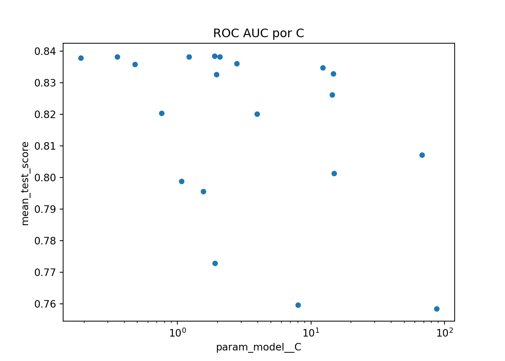
Paso 8: Selección de modelo a usar
# Selección del mejor modelo según ROC AUC.
svm_classification_best_model = svm_tune_class_result.best_params_
svm_classification_best_model## {'model__C': 1.8944836908329918, 'model__gamma': 0.001774372883716282}# Aproximación al criterio 1-SE para clasificación.
best_score = svm_tune_class_result.best_score_
std_score = svm_class_results.loc[svm_tune_class_result.best_index_, "std_test_score"]
svm_classification_best_1se_model = (
svm_class_results.query("mean_test_score >= @best_score - @std_score")
.sort_values("param_model__C")
.iloc[0]
.filter(like="param_")
)
svm_classification_best_1se_model## param_model__C 0.188936
## param_model__gamma 0.00543
## Name: 15, dtype: objectPaso 9: Ajuste de modelo final con todos los datos (Vuelve al paso 2, si es necesario)
# Modelo final.
svm_classification_final_model = svm_tune_class_result.best_estimator_
svm_classification_final_model## Pipeline(steps=[('features',
## DataFrameFunctionTransformer(func=<function preprocess_telco_frame at 0x17a5525c0>,
## kw_args={'keep_target': False})),
## ('preprocess',
## ColumnTransformer(transformers=[('num',
## Pipeline(steps=[('imputer',
## SimpleImputer(strategy='median')),
## ('scaler',
## StandardScaler())]),
## <sklearn.compose._column_transformer.make_column_selector object at 0...
## Pipeline(steps=[('imputer',
## SimpleImputer(strategy='most_frequent')),
## ('onehot',
## OneHotEncoder(handle_unknown='ignore',
## sparse_output=False))]),
## <sklearn.compose._column_transformer.make_column_selector object at 0x3040f90d0>)],
## verbose_feature_names_out=False)),
## ('model',
## SVC(C=1.8944836908329918, gamma=0.001774372883716282,
## probability=True, random_state=1352))])Como hemos hablado anteriormente, este último objeto es el modelo final entrenado, el cual contiene toda la información del pre-procesamiento de datos, por lo que en caso de ponerse en producción el modelo, sólo se necesita de este último elemento para poder realizar nuevas predicciones.
Antes de pasar al siguiente paso, es importante validar que hayamos hecho un uso correcto de las variables predictivas. En este momento es posible detectar variables que no estén aportando valor o variables que no debiéramos estar usando debido a que cometeríamos data leakage. Para enfrentar esto, ayuda estimar y ordenar el valor de importancia del modelo.
churn_importance_result = permutation_importance(
svm_classification_final_model,
X_telco_test,
y_telco_test,
scoring="roc_auc",
n_repeats=10,
random_state=123,
)churn_importance_result = permutation_importance(
svm_classification_final_model,
X_telco_test,
y_telco_test,
scoring="roc_auc",
n_repeats=5,
random_state=123,
)
churn_importance = (
pd.DataFrame(
{
"Variable": X_telco_test.columns,
"Importance": churn_importance_result.importances_mean,
"StDev": churn_importance_result.importances_std,
}
)
.sort_values("Importance", ascending=False)
)
display(churn_importance.head(20))## Variable Importance StDev
## 19 TotalCharges 0.093168 0.005815
## 18 MonthlyCharges 0.055057 0.004451
## 8 InternetService 0.032031 0.005912
## 5 tenure 0.012428 0.003120
## 17 PaymentMethod 0.006940 0.001380
## 15 Contract 0.005610 0.001167
## 12 TechSupport 0.005060 0.001127
## 16 PaperlessBilling 0.004255 0.001981
## 6 PhoneService 0.004098 0.000592
## 9 OnlineSecurity 0.003301 0.001040
## 2 SeniorCitizen 0.001994 0.000443
## 13 StreamingTV 0.001987 0.000521
## 7 MultipleLines 0.001599 0.000468
## 14 StreamingMovies 0.001376 0.000614
## 10 OnlineBackup 0.000370 0.000707
## 11 DeviceProtection 0.000245 0.000364
## 4 Dependents 0.000243 0.000508
## 1 gender 0.000001 0.000294
## 0 customerID 0.000000 0.000000
## 3 Partner -0.000885 0.000538ax = churn_importance.sort_values("Importance").tail(20).plot.barh(
x="Variable", y="Importance", xerr="StDev", legend=False, figsize=(8, 6)
)
ax.set_title("Variable Importance Measure")## Text(0.5, 1.0, 'Variable Importance Measure')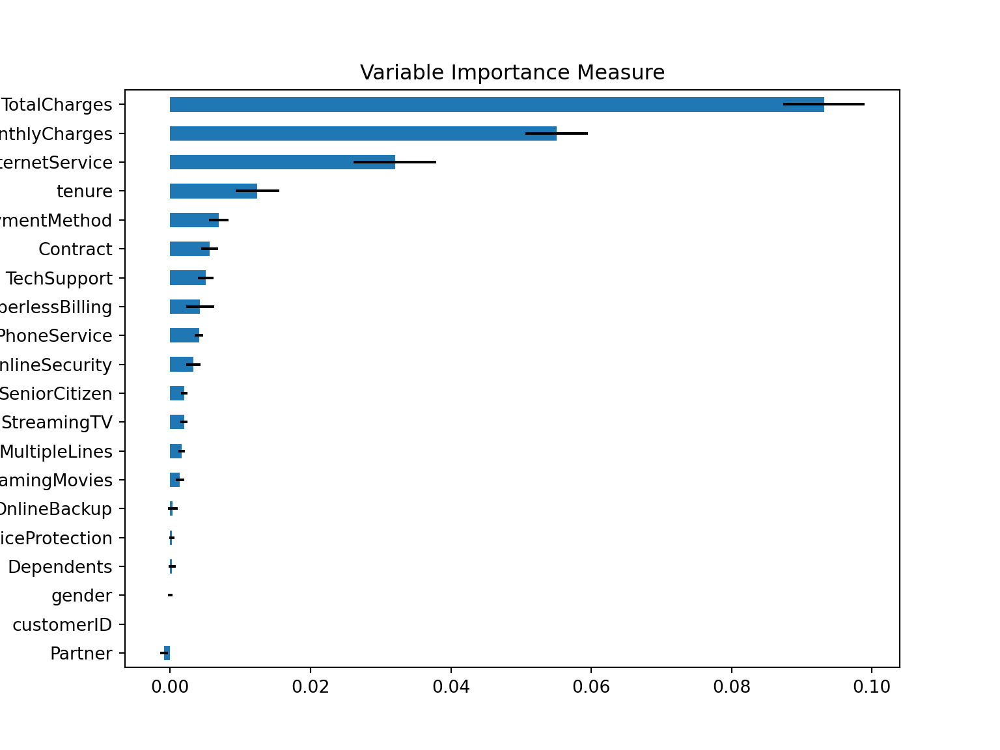
Paso 10: Validar poder predictivo con datos de prueba
Imaginemos por un momento que pasa un mes de tiempo desde que hicimos nuestro modelo, es hora de ponerlo a prueba prediciendo valores de nuevos elementos:
# Predicciones
proba = svm_classification_final_model.predict_proba(X_telco_test)
classes = svm_classification_final_model.named_steps["model"].classes_
results_cla = pd.DataFrame({f".pred_{label}": proba[:, i] for i, label in enumerate(classes)})
results_cla["truth"] = y_telco_test.to_numpy()
results_cla.head()## .pred_No .pred_Yes truth
## 0 0.858389 0.141611 No
## 1 0.829910 0.170090 No
## 2 0.927253 0.072747 No
## 3 0.357032 0.642968 Yes
## 4 0.452321 0.547679 Yesroc_curve_data = roc_curve_table(results_cla["truth"], results_cla[".pred_Yes"])
pr_curve_data = pr_curve_table(results_cla["truth"], results_cla[".pred_Yes"])
fig, axes = plt.subplots(1, 2, figsize=(10, 4))
axes[0].plot(1 - roc_curve_data["specificity"], roc_curve_data["sensitivity"], color="lightblue")## [<matplotlib.lines.Line2D object at 0x30405b390>]axes[0].plot([0, 1], [0, 1], color="black", linewidth=1)## [<matplotlib.lines.Line2D object at 0x304036410>]axes[0].set_title("ROC Curve")## Text(0.5, 1.0, 'ROC Curve')axes[0].set_xlabel("1 - specificity")## Text(0.5, 0, '1 - specificity')axes[0].set_ylabel("sensitivity")## Text(0, 0.5, 'sensitivity')axes[1].plot(pr_curve_data["recall"], pr_curve_data["precision"], color="lightblue")## [<matplotlib.lines.Line2D object at 0x302b9ffd0>]axes[1].set_title("Precision vs Recall")## Text(0.5, 1.0, 'Precision vs Recall')axes[1].set_xlabel("recall")## Text(0.5, 0, 'recall')axes[1].set_ylabel("precision")## Text(0, 0.5, 'precision')plt.tight_layout()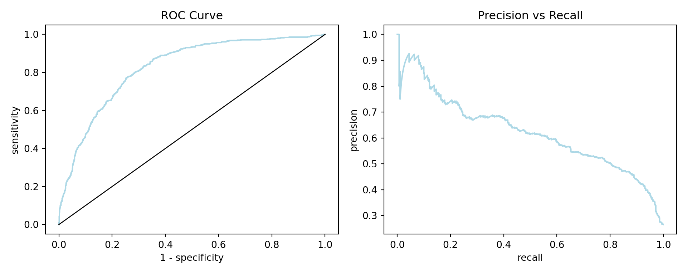
Pueden usar la app de shiny que nos permite jugar con el treshold de clasificación para tomar la mejor decisión.
3.8 Ejercicios
Crear un workflow de principio a fin usando SVM con kernel lineal
Crear un workflow de principio a fin usando SVM con kernel polinomial
Crear un workflow de principio a fin usando SVR con kernel lineal
Crear un workflow de principio a fin usando SVR con kernel polinomial
Comparar resultados con ejercicio desarrollado en clase